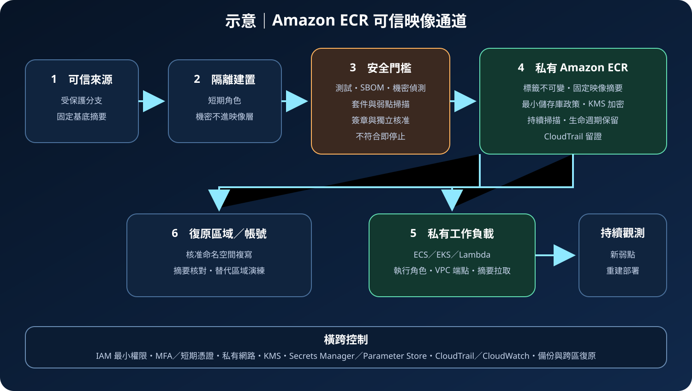

Amazon ECR：容器映像登錄與供應鏈治理
Amazon Elastic Container Registry（Amazon ECR）是受管容器映像登錄服務，用來儲存、管理與分發 OCI 相容映像及相關成品。它提供儲存庫、權限、加密、掃描、生命週期與複寫能力，但不會自行保證映像來源可信、弱點均已修復或執行中的容器安全。
作者：Dr. William｜查閱與發布：2026-09-20
服務定位
Amazon ECR 位於容器建置與部署之間。建置系統將映像推送至私有儲存庫，ECS、EKS、Lambda 或其他具授權的執行環境再依標籤或摘要拉取映像。ECR 可集中保存映像、套用儲存庫政策、加密靜態資料、掃描已知弱點，並將內容複寫至其他區域或帳號。
ECR 不是原始碼管理、建置服務、簽章核准系統、執行期防護或修補平台。映像是否由可信來源建置、套件是否更新、簽章是否驗證、部署是否允許，以及容器啟動後的網路與主機防護，仍需由 CI/CD、IAM、AWS Signer 或相容簽章工具、部署政策及執行平台共同完成。
核心概念與適用邊界
主要元件
- Registry：每個 AWS 帳號在支援區域具有私有登錄端點，登入授權權杖具時效性。
- Repository：映像與成品的邏輯集合，可設定儲存庫政策、標籤可變性、加密與掃描選項。
- Image tag：方便人員閱讀的別名，例如 release-20260920；標籤可能被覆寫，不能單獨代表不可變身分。
- Image digest：由內容計算的識別值。部署固定摘要可避免相同標籤在不同時間指向不同內容。
- Image scanning：基本掃描或增強型掃描可找出已知套件弱點；結果受掃描模式、支援套件與資料庫時效限制。
- Lifecycle policy：依標籤狀態、前綴、數量或時間清除舊映像，降低儲存成本。
- Replication：可依規則跨區域或跨帳號複寫私有映像，支援就近部署與復原準備。
邊界與依賴
- ECR 是區域性服務；儲存庫、映像、KMS 金鑰、掃描設定與政策需按區域治理。
- 儲存庫政策與呼叫者 IAM 政策共同影響存取，跨帳號授權需同時確認信任與資源範圍。
- 弱點掃描是風險訊號，不等於修補；修復通常需要更新基底映像、重新建置並重新部署。
- 複寫只處理符合規則的新推送內容，不能取代部署設定、機密、資料與基礎設施的復原。
- 映像層可能保留曾刪除的檔案內容；任何機密一旦加入建置層，就應視為已暴露並輪替。
- 公開 ECR 與私有 ECR 的公開範圍、拉取方式、配額及政策不同；內部成品應預設使用私有儲存庫。
適合與不適合的使用情境
適合
- AWS 上的 ECS、EKS 或 Lambda 容器工作負載需要低摩擦、受 IAM 控制的私有映像來源。
- 多個團隊需要依帳號、環境、應用程式或資料敏感度拆分映像儲存庫與權限。
- 需要集中管理映像保留、已知弱點掃描、CloudTrail 稽核與跨區複寫。
- 部署流程需要以不可變摘要固定版本，並保留可回復映像與建置證據。
不適合或不能單獨完成
- 需要完整跨雲或地端中立登錄治理，而無法接受 AWS 區域與 IAM 相依時，應評估其他登錄方案。
- 需要原始碼掃描、SBOM 產生、密鑰偵測、簽章核准及部署准入時，ECR 必須與其他供應鏈工具整合。
- 需要偵測執行期惡意行為、容器逃逸或東西向攻擊時，仍需主機、Kubernetes、網路及威脅偵測控制。
- 以映像標籤覆寫作為版本管理、沒有摘要與回復版本時，不宜直接驅動高風險生產部署。
示意故事案例：訂單服務的可信映像通道
以下為示意案例，不代表特定組織或正式部署。 一個訂單平台將來源提交交給隔離的建置工作，使用固定摘要的基底映像產生應用映像。建置過程不寫入長期憑證；需要套件來源授權時，工作角色以最小權限從 Secrets Manager 取得短期所需值，並避免將內容輸出至映像層或日誌。
測試、套件清冊、機密偵測與弱點門檻通過後，管線把映像推送到生產專用 ECR 儲存庫。標籤設為不可變，部署核准引用映像摘要而非 latest。ECR 掃描結果送往安全流程，高風險發現會阻止新版本部署；既有映像出現新弱點時則觸發重建。核准映像複寫至復原區域，ECS 服務透過私有網路路徑拉取，CloudTrail 記錄政策與映像操作。

建置與運作流程
- 分類儲存庫：依帳號、環境、應用程式、擁有者與敏感度建立命名規則，避免開發與生產共用寫入邊界。
- 設定加密：依法規與職責分離需求選擇預設加密或客戶管理 KMS 金鑰；建立儲存庫前先完成金鑰政策與復原安排。
- 鎖定標籤：啟用標籤不可變或明確排除規則，部署一律保存並引用映像摘要。
- 拆分 IAM 權限：建置角色只推送指定儲存庫，執行角色只拉取核准映像，安全角色只讀掃描結果，管理員權限另行管控。
- 建立私有連線：私有子網路工作負載使用適當的 ECR API、ECR DKR 與 S3 VPC 端點，並以安全群組、端點政策及 DNS 控制連線。
- 保護建置：使用固定基底映像、隔離且可重建的環境；機密透過 Secrets Manager 或 Parameter Store 在執行期取得，不寫入 Dockerfile、建置參數、映像層或日誌。
- 執行安全門檻：建置前後進行套件、機密及惡意內容檢查；啟用適當 ECR 掃描，按風險、修補可用性與例外期限決定是否放行。
- 推送與核准：以短期授權登入 ECR，推送後記錄摘要、來源提交、SBOM、測試與簽章證據；核准流程不得只相信可變標籤。
- 部署與觀測：讓 ECS、EKS 或 Lambda 使用專用執行角色拉取固定摘要，監看拉取失敗、掃描發現、政策變更與異常刪除。
- 保留與復原：生命週期政策先在非生產資料驗證，再保留足夠回復版本；重要映像跨區或跨帳號複寫並定期演練重新部署。
成本、可用性與維運考量
ECR 成本主要來自私有儲存庫儲存量、資料傳輸、掃描及相關服務。重複映像層可能降低部分儲存消耗，但不能以此取代生命週期治理。跨區或跨帳號複寫、跨區拉取、NAT Gateway、VPC 端點、CloudWatch、KMS 與安全分析也會產生成本。估算時應納入映像大小、每日建置次數、保留版本、拉取位置、掃描頻率與復原副本。
ECR 受管服務降低自建登錄的維護負擔，但工作負載仍會受到區域、網路、IAM、KMS、映像大小與服務配額影響。執行平台應在各可用區具備拉取路徑與容量，節點可在允許的情況下使用快取，但不得依賴未治理的本機副本。高可用設計需避免讓單一建置角色、金鑰或網路出口成為共同故障點。
跨區複寫可縮短復原區域取得映像的時間，但需要預先驗證目的地登錄政策、KMS、服務角色與部署權限。應以固定摘要核對來源和副本一致性，保存最近已核准版本，並演練在主要區域不可用時從替代區域部署。生命週期政策不得提前刪除仍在回復窗口內的映像。
Amazon ECR 特有資安風險與控制
- 標籤遭覆寫：開啟標籤不可變，部署及回復固定映像摘要；限制誰可 PutImage，對例外覆寫建立明確規則。
- 惡意或脆弱映像進入生產：隔離建置、固定基底來源、產生 SBOM，結合 ECR 掃描、簽章驗證與風險門檻；修補後重新建置而非直接修改執行中容器。
- 映像層洩漏機密：建置前掃描 Dockerfile、內容與歷史層；機密由 Secrets Manager／Parameter Store 動態提供。若曾寫入映像，立即輪替並移除所有受影響版本。
- 儲存庫政策過寬：避免萬用 Principal 與資源，限定帳號、組織、角色、動作及必要條件；跨帳號存取同時檢查身分政策與儲存庫政策。
- 長期登入資訊被濫用：人員使用聯合登入、MFA 與短期憑證，工作負載使用 IAM 角色；不建立或散布長期 Access Key。
- 未授權公開：內部映像放在私有 ECR，定期盤點 ECR Public 與私有儲存庫；禁止將內部成品複製到公開 gallery。
- KMS 權限或金鑰失效：限制金鑰管理與使用權，監控政策變更及停用；建立替代區域金鑰與重建流程，避免誤刪造成映像不可用。
- 掃描盲點與過期結果：確認掃描模式、支援範圍與重新掃描機制；把發現送入持續分流，另做原始碼、機密、授權與執行期檢查。
- 生命週期政策誤刪：先預覽政策效果，保護正式與回復標籤，監控批次刪除；在另一區域或帳號保留核准副本。
- 網路路徑暴露：私有工作負載使用 VPC 端點、最小端點政策與受控 DNS／出站；安全群組只允許必要 TLS 流量。
- 稽核與偵測不足：以 CloudTrail 記錄 ECR 控制面及適用資料事件，將政策變更、刪除、掃描與拉取異常送往 CloudWatch 或集中安全平台。
- 複寫擴大污染：只複寫經核准命名空間，目的地採獨立最小權限；發現供應鏈事件時可停止複寫、隔離摘要並從可信來源重建。
共同責任邊界
AWS 負責 ECR 受管服務與底層雲端基礎設施的安全，包括服務控制面、儲存基礎設施與平台可用性。客戶負責映像內容與來源、儲存庫分類、IAM 及資源政策、標籤可變性、KMS 設定、掃描選擇與發現處置、生命週期、複寫、部署准入及執行期安全。
客戶仍須落實 IAM 最小權限、人員 MFA 與短期憑證、帳號及網路隔離、公開存取盤點、KMS 加密、Secrets Manager／Parameter Store 機密管理、CloudTrail／CloudWatch 觀測，以及核准映像、部署設定與應用資料的備份及跨區復原。AWS 不會替客戶判斷映像是否符合業務風險、修復應用弱點，或保證被刪除的回復版本可重新取得。
上線前可執行檢查清單
- □ 私有儲存庫已按帳號、環境、應用程式與擁有者分界，沒有非必要公開成品。
- □ 建置、推送、拉取、安全檢視與管理角色分離，均符合 IAM 最小權限。
- □ 人員使用聯合登入、MFA 與短期憑證；工作負載使用 IAM 角色，沒有長期 Access Key。
- □ 標籤不可變政策符合發布流程，生產部署與回復均引用映像摘要。
- □ 基底映像固定可信來源與摘要，建置環境隔離、可重建並產生 SBOM。
- □ Dockerfile、建置參數、映像層及日誌不含密碼、Token、cookie 或其他機密。
- □ 機密由 Secrets Manager 或 Parameter Store 在執行期提供，存取及輪替權限受控。
- □ 掃描模式與涵蓋範圍已確認，高風險發現具有阻擋、例外期限、重建與重新部署流程。
- □ 儲存庫政策及跨帳號信任不含過寬 Principal、動作或資源，iam:PassRole 亦受限制。
- □ 私有工作負載具備 ECR API、ECR DKR 與 S3 所需路徑，VPC 端點政策及安全群組最小化。
- □ 儲存庫與映像採適當 KMS 加密，金鑰政策、停用監控與替代區域安排已驗證。
- □ CloudTrail 集中留存政策、推送與刪除事件，CloudWatch 或安全平台對異常活動告警。
- □ 生命週期政策已預覽，不會刪除現行、回復窗口、調查保全或法規要求的映像。
- □ 重要映像已跨區或跨帳號複寫，固定摘要一致，並已實測替代區域拉取及部署。
- □ 已估算儲存、掃描、傳輸、複寫、KMS、VPC 端點、日誌與安全分析成本。
AWS 官方一手來源
- Amazon ECR User Guide｜What is Amazon ECR?（查閱：2026-09-20）
- Scan images for software vulnerabilities in Amazon ECR（查閱：2026-09-20）
- How Amazon ECR works with IAM（查閱：2026-09-20）
- Private repository policies in Amazon ECR（查閱：2026-09-20）
- Encryption at rest in Amazon ECR（查閱：2026-09-20）
- Private image replication in Amazon ECR（查閱：2026-09-20）
- Amazon ECR pricing（查閱：2026-09-20）
- AWS Well-Architected Security Pillar｜Shared responsibility（查閱：2026-09-20）
內容說明
本文依查閱日可用的 AWS 官方文件整理，作為基礎學習與架構討論材料；實際部署仍須依最新功能、區域支援、價格、配額、組織政策、資料分類、法規及復原演練結果調整。